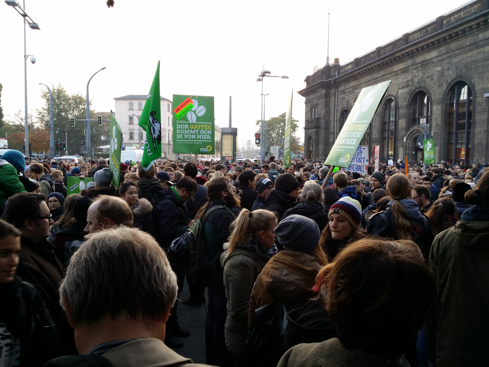

Café Kanzler – Warum diese Seite?
Ich habe dieses Video Mitte des Jahres zum ersten Mal gesehen und gehört. Es hat mich zutiefst berührt, weil es auf den Punkt bringt, wie es um unsere Gesellschaft steht. Man möchte etwas tun, aber findet tausend Gründe, es dann doch nicht zu machen. Bequemlichkeit aber rettet uns nicht vor "Fehlentwicklungen"
Schon immer war mir klare Kante wichtig: 2015 bin ich morgens von Frankfurt aus zur großen Anti-PEGIDA-Demonstration nach Dresden gefahren - und abends wieder zurück. Es gab für mich keine andere Alternative, als Flagge zu zeigen.
Aus diesem Antrieb heraus ist café-kanzler.de entstanden. Wir dürfen nicht nur zusehen oder berührt sein – wir müssen aktiv etwas machen. Auf meinem Blog zeige ich klare Kante für Demokratie und Zivilcourage. Zu manchen Themen sag' ich auch einfach nur meine Meinung.
Zur Einordnung: Das im Video behandelte Lied verhandelt deutsche NS-Familiengeschichte – Verdrängung innerhalb der eigenen Familie und Kontinuitäten, die bis in die Gegenwart reichen, etwa mit Blick auf Politiker wie Björn Höcke und die AfD.
Opa zieht mit dem Panzer durch das Schtetl Der Wald ächzt neblig Die Bäume klamm Schwarze Erde blutgetränkt Ein Partisan unter Krähen an einem Baum erhängt Opa der zitternd immer wieder nur an Oma denkt Die sitzt mit ihren Freunden in der Sonne isst ein Schnitzel Schwarzrotweißer Schirm Gegen die Hitze Und das Bier ist herrlich kalt Im Hintergrund nur unscharf Die Schornsteine von Buchenwald Das Gerücht über die Juden Der Geruch von Senf Riecht Opa unter seiner Maske alles ist versengt Und plötzlich stehen hier Menschen Noch ein Mensch und noch ein Mensch Oder hundert die zu Schubertklängen in der Scheune brennen Schieß drauf Opa Stell sie an die Wand Du kannst nichts dafür Du dienst nur deinem Land Mach die Augen zu Und stell bloß keine Fragen 80 Jahre später sag ich Auch du warst im Widerstand Ich bin Enkel von Mördern Doch sie könnens gut verstecken Unter Blümchentischdecken Liegt das Grauen liegt das Messer Ganz normale Deutsche Haben nichts gewusst Ziehen unter die Geschichte Endlich einen Schlussstrich Enkel von Monstern Doch es wird nie befreit Nimm dir nach von den Kartoffeln und vergiss nie Auch in der Nazizeit war Spargelzeit Heute Bin ich ein guter Mensch Ich bin Demokrat Sowas könnt mir nicht passieren Ich verüb ein Attentat Auf den Führer Wenns je wieder soweit kommt siehst du mich nicht vorn dabei Sondern Untergrund Widerstand Partisanenstyle Das dacht ich als ich jung war Ich bin doch kein Rassist Die Welt ein freier Ort Wo nichts in Stein gemeißelt ist Die Nazis ewig her Und das waren andre Wesen So wie Aliens oder Monster Aber keine echten Menschen Heute seh ich die Kontinuitäten Die Linien die von meinem Opa führen Bis zum Massaker in der Ukraine Von Goebbels zu Höcke Neuer Glanz für alten Dreck Wir haben sie nicht gesehen Doch die Monster waren nie weg Und was rede ich von Monstern Das waren ganz normale Männer Klein beleidigt und gekränkt Karrierewillen kleine Gangster Mit Mutterkomplexen und von guten Schulen Sieh dir Deutschland heute an 80 Jahre weiterspulen Es gibt endlich wieder blonde Männer stolz auf ihr Land Zweitstärkste Kraft Und jeder der da nicht reinpasst Friert hier schon so lang Doch ich hab meine Karriere Weisst du es ist kompliziert Muss an die Kinder denken Man ich kann nicht emigrieren Und so lieg ich in der Wanne Was ist nur mit mir geschehen Will so gerne protestieren Doch das ist so unbequem Meine weichen schwachen Hände Haben keinen blassen Schimmer So geht die Welt zugrunde Nicht mit einem Knall Sondern mit Gewimmer Ich bin Enkel von Mördern Doch sie könnens gut verstecken Unter Blümchentischdecken Liegt das Grauen liegt das Messer Ganz normale Deutsche Haben nichts gewusst Ziehen unter die Geschichte Endlich einen Schlussstrich Ich bin Enkel von Monstern Doch es wird nie befreit Nimm dir nach von den Kartoffeln und vergiss nie Auch in der Nazizeit war Spargelzeit.

Anti-PEGIDA-Demonstration, Dresden 2015, vor dem Bahnhof Dresden-Neustadt. Eigenes Foto.